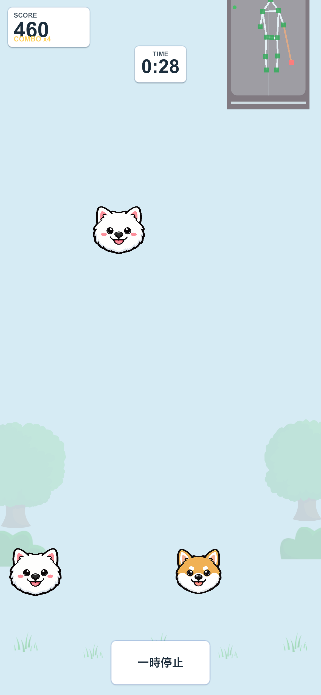

VERSION 2.0.0
犬と遊ぶ。
体を動かす。
横へ一歩、ゆっくりスクワット。あなたの動きで犬が動く、iPhone・iPadの運動ゲームです。今日は、どちらの犬と遊びますか？
DogDropは「わんムーブ」へ。これまでのDogDropに、新しいゲームDogTrailが加わりました。
カメラ映像や身体の骨格座標は、端末上で処理し、保存・送信しません。
一般向けの運動ゲームです。医療・リハビリテーションを目的としたアプリではありません。


指で操作する代わりに、体の動きを前面カメラで読み取ります。
QUICK START
すぐに、シンプルに。
CHOOSE YOUR GAME
今日は、どっちで遊ぶ？
どちらも3つのレベルから。まずはLevel 1で、自分のペースを見つけましょう。
ステップ ＋ スクワット · 1〜5分
DogDrop ドッグドロップ
犬をそろえて、スコアを伸ばそう。
横へ一歩で犬を1レーン移動。無理のない深さでしゃがむと、犬が素早く降下します。下にいる同じ犬種へ届けましょう。
- Levelとプレイ時間を選べる
- スコアやステップ・スクワット回数を振り返る
スクワット · 約1分
DogTrail ドッグトレイル
道に沿って、ゴールへ向かおう。
しゃがむと犬が下へ、立ち上がると上へ。先の道を見ながら、犬の判定点を道の中に合わせます。自分の無理のない範囲で遊べます。
- 3レベル × 各6パターンのコース
- 路上率と銅・銀・金メダルに挑戦
BEFORE YOU PLAY
はじめるまで、3ステップ。
ゲームを選んだら、画面の案内に沿って準備。初回のカメラ許可と、任意の利用状況データの確認があります。
-
1
ゲームを選ぶ
「ゲームをえらぶ」からDogDropかDogTrailへ。DogDropはLevelと時間、DogTrailはコースを選びます。
-
2
端末と安全を確認
端末を腰くらいの高さに固定し、画面を自分へ。左右と後方のスペース、床、体調を確認します。
-
3
姿勢を整えて遊ぶ
約1.5m離れ、全身をカメラへ。DogDropは姿勢調整、DogTrailは無理なくしゃがめる範囲の調整を行います。
AT YOUR OWN PACE
少しずつ、自分のペースで。
長く頑張るより、まずは短いプレイから。日々の記録を振り返りながら、犬と体を動かす時間を楽しみましょう。
DogDropは1〜5分、DogTrailは約1分。準備時間は別です。
深くしゃがむ必要はありません。痛みや不調を感じたら中止してください。
日・週・月・年ごとに、2つのゲームの回数や時間を確認できます。
ゲーム履歴は端末内に保存。利用状況データの送信は任意です。
最初の1分を、犬といっしょに。
ゲームごとの遊び方と、無理なく始める準備を確認できます。